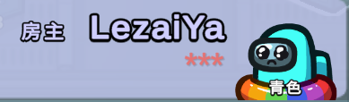
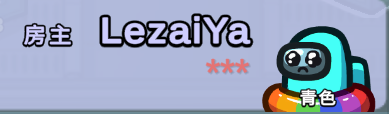

當Final Suspect偵測到聊天內容中包含違禁詞（如侮辱性詞彙、廣告、敏感資訊等）時，會自動將該詞彙替換為星號(*)，而不會影響句子的其餘部分。
功能能在維持聊天可讀性的同時，有效減少違規內容傳播。
您可以在設定中關閉此功能。
FinalSuspect
屏蔽違禁詞
屏蔽違禁詞示意圖：
當Final Suspect偵測到聊天內容中包含違禁詞（如侮辱性詞彙、廣告、敏感資訊等）時，會自動將該詞彙替換為星號(*)，而不會影響句子的其餘部分。
功能能在維持聊天可讀性的同時，有效減少違規內容傳播。
您可以在設定中關閉此功能。
屏蔽違禁詞示意圖：
